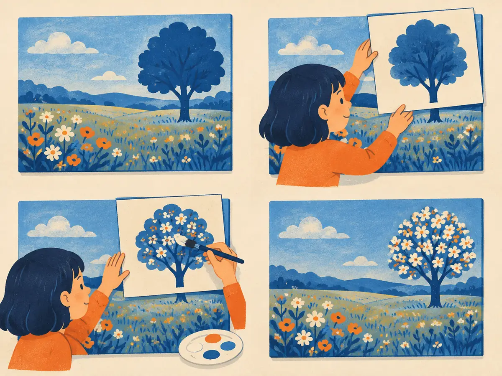

Controlling & editing images
A prompt is a blunt instrument. "A dancer, arms raised" won't give you this pose, your dog, or the same photo with one tree changed. This lesson covers the add-ons that made diffusion models controllable: extra conditions, personalization, editing, and the labels that say an image was generated.
By the end you can
- Explain how ControlNet and IP-Adapter add new conditions to a frozen model.
- Compare textual inversion, DreamBooth and LoRA for personalization, and count LoRA's parameters.
- Explain inpainting, SDEdit's strength knob and instruction editing, and what C2PA and invisible watermarks can and can't do.
Guess first; you'll see why below.
You want an existing text-to-image model to follow a stick-figure pose. What's the usual approach?
- Describe the pose in more and more detail in the prompt
- Retrain the whole model from scratch on posed images
- Attach a small trainable network that reads the pose map and nudges the frozen model's features
- It can't be done with diffusion models
In "image-to-image" mode, a strength slider near 1.0 usually gives…
- An image that ignores most of your input picture
- An exact copy of your input
- A higher-resolution version of your input
- An error
ControlNet, image prompts and personalization
Text is a poor way to say exactly where things go. In February 2023, Zhang, Rao & Agrawala ("Adding Conditional Control to Text-to-Image Diffusion Models") showed how to add spatial conditions to a pretrained Stable Diffusion model without retraining it. ControlNet accepts a control image of the same size as the output: Canny edges, a depth map, an OpenPose skeleton, a segmentation map, a scribble, surface normals. The generated image follows that structure while the prompt decides content and style.
The design protects the base model, which took enormous compute to train:
- Freeze the original denoiser.
- Copy its encoder blocks and middle block into a trainable branch, initialised with the same weights, so the branch starts out already understanding images.
- Feed the control image (through a few small convolutions) into the copy.
- Add the copy's outputs to the frozen decoder through zero convolutions, 1×1 convolutions whose weights and biases start at 0. At the start of training ControlNet changes nothing, so no harmful noise reaches the frozen model; the connections grow as the copy learns.
Each ControlNet is trained for one kind of condition on (image, control map, caption) triples, which are cheap to make: run an edge detector or pose estimator over ordinary photos. Several ControlNets can be combined at inference. T2I-Adapter (Mou et al., 2023) does the same job with a much smaller side network, trading some fidelity for speed.
Image prompts and personalization
IP-Adapter (Ye et al., 2023) lets you prompt with an image: "something in the style of this picture" or "this character". A frozen CLIP image encoder (V1.2) turns the reference into a few feature tokens. Each cross-attention layer gets a second, decoupled set of key and value projections for those image tokens, and its output is added to the ordinary text cross-attention. Only the new projections and a small mapping network are trained, about 22 million parameters, and the same adapter works with community fine-tunes of the base model.
Personalization teaches a model a new subject, such as your dog or your product, from a handful of photos:
- Textual inversion (Gal et al., 2022, "An Image is Worth One Word"): keep the whole model frozen and learn just one new token embedding, $S_*$, from 3–5 images. Tiny, but limited in how much detail one embedding can hold.
- DreamBooth (Ruiz et al., 2022): fine-tune the whole denoiser on 3–5 images captioned with a rare identifier ("a photo of [V] dog"), plus a prior-preservation loss on generated images of ordinary dogs so the model doesn't forget what dogs in general look like. High fidelity, but a full copy of the model per subject.
- LoRA (Hu et al., 2021; M3.7), applied to the denoiser's attention layers, became the community standard soon after Stable Diffusion's release: freeze $W$, learn $\Delta W = BA$ of rank $r$. Adapters are small files that can be shared, swapped and mixed, and DreamBooth-style training is often done with LoRA.
Worked example
A $320 \times 320$ attention projection (the width of Stable Diffusion 1.x's highest-resolution blocks), LoRA rank $r = 4$:
- Full matrix: $320 \times 320 = 102{,}400$ weights.
- LoRA: $A$ is $4 \times 320$ and $B$ is $320 \times 4$, so $2 \times 320 \times 4 = 2{,}560$ weights.
- That's $2{,}560 / 102{,}400 = 2.5\%$ of the layer.
A $640 \times 640$ projection with rank $r = 8$.
- Full matrix weights:
- LoRA weights:
- Share of the layer, in percent:
Which personalization method leaves every model weight frozen and learns only a new word embedding?
- DreamBooth
- LoRA
- ControlNet
- Textual inversion
Editing: inpainting and SDEdit
Inpainting regenerates only a masked region. A training-free version works with any diffusion model: at every denoising step, overwrite the unmasked area with the original image noised to the current step, and let the model fill the hole so it blends in (RePaint, Lugmayr et al., 2022, refined this). Dedicated inpainting models do better by taking the mask as input: Stable Diffusion's inpainting variant reads 9 input channels instead of 4 (the noisy latent, the latent of the masked image, and the mask).
SDEdit (Meng et al., 2021, "Guided Image Synthesis and Editing with Stochastic Differential Equations") edits a whole image with no extra training. Take the input, perhaps a crude painting, and noise it to an intermediate step $t_0$ with the forward process (G1.3), then denoise from there. The noise wipes out fine detail but keeps the layout and colours; denoising fills in realistic detail. The strength $t_0/T$ is a trade-off: low strength stays faithful to the input but may look unrealistic; high strength looks realistic but forgets the input. Most "image-to-image" modes are SDEdit: in the common diffusers implementation, strength 0.6 with 50 sampling steps skips the first 20 and runs the last 30.
Playground: SDEdit on the toy
The sketch is a ring of points that isn't on the data. Pick a strength: the ring is noised to $t_0 = 1000 \times$ strength, then denoised (DDIM, exact denoiser of the moons). Grey lines show how far each point moved.
On this toy the data band is thin, so even small strengths snap points onto the moons; on real images the useful range is wider and depends on the model and schedule. Notice the two numbers in the readout move in opposite directions: that is the faithfulness–realism trade-off.
Explain like I'm 5

You love your meadow painting, except for one plain tree. So you lay a stencil over the painting with a hole just where the tree is, and repaint only through the hole. The rest of the meadow stays exactly as it was.
Because you can see the meadow all around the hole, you paint the new blossoming tree so its colours and light match. That's inpainting: the mask is the stencil, and the model looks at everything outside it while it paints inside.
Where it breaks: the model doesn't "paint over" pixels. It fills the hole with noise and denoises it step by step, while keeping the outside fixed.
In SDEdit, what happens as you raise the strength from 0.2 to 0.9?
- The output gets closer to the input image
- Nothing changes; strength only affects speed
- More of the input is destroyed by noise, so the output looks more realistic but follows the input less
- The mask grows
Instruction editing and provenance
Masks and strength sliders are clumsy. You'd rather say "make it winter". InstructPix2Pix (Brooks, Holynski & Efros, 2022) trained a diffusion model to do that, using entirely synthetic data. A fine-tuned GPT-3 wrote edit instructions and "after" captions for real captions; Stable Diffusion with Prompt-to-Prompt (Hertz et al., 2022), a technique for making two images that differ only where their prompts differ, turned each caption pair into a before/after image pair. That gave hundreds of thousands of (input image, instruction, edited image) examples.
The model reads the input image (its latent is concatenated to the noisy latent) and the instruction (through cross-attention), and uses two guidance scales (G1.4): one for how closely to stick to the input image, one for how strongly to follow the instruction. As of 2026, instruction editing is mostly done conversationally by natively multimodal models (G1.6), where "now make it winter" is just the next message, though dedicated editing models remain popular for precise work.
Provenance and safety
Once images are easy to fake, people need ways to tell how an image was made. Two complementary tools are in use, and neither is a complete answer.
- Signed metadata (C2PA). The Coalition for Content Provenance and Authenticity, founded in 2021 by companies including Adobe and Microsoft, defines "Content Credentials": a cryptographically signed record, attached to the file, of which tool made or edited it. Several major generators and some cameras and editing apps write it. The weakness: metadata is easy to strip, and a screenshot removes it.
- Invisible watermarks. Google DeepMind's SynthID (2023) hides a signal in the pixels themselves, designed to survive common edits such as compression, cropping and colour changes, and later extended to text, audio and video. Watermarks can still be weakened by heavy edits, and a detector only recognises its own scheme, so a missing watermark proves little.
Regulation is pushing in the same direction: the EU AI Act includes transparency rules requiring machine-readable marking of AI-generated content, phasing in from 2026. Providers also filter prompts and outputs (for example to block sexual imagery of real people and abuse material) and limit realistic depictions of public figures, with policies that differ by provider and change often. Copyright questions over training data and outputs are being argued in courts in several countries, with no settled global answer as of late 2026.
An image has no C2PA Content Credentials and no SynthID watermark is detected. What can you conclude?
- It is definitely a real photo
- It is definitely AI-generated
- It was made before 2021
- Very little: metadata is easily stripped, and each watermark detector only finds its own scheme
You have a frozen text-to-image model. Explain how you'd make it (a) follow a pose skeleton and (b) draw your own dog, and what gets trained in each case.
Which component does IP-Adapter add to each cross-attention layer?
- A second U-Net
- A separate key/value projection for image-prompt tokens, whose attention output is added to the text attention
- A discriminator
- A new noise schedule
From M3.7: LoRA initialises $B = 0$, so $\Delta W = BA$ starts at zero. Which ControlNet design choice follows the same idea?
- Zero convolutions connecting the trainable copy to the frozen model
- Copying the encoder weights
- Using an edge detector
- Freezing the text encoder
What does DreamBooth's prior-preservation loss prevent?
- The subject's identifier being forgotten
- The model running out of memory
- The model forgetting what the general class looks like, so every "dog" becomes your dog
- Overly bright images
A training-free way to inpaint with any diffusion model is to…
- Blur the masked region and upscale it
- Run SDEdit at strength 1.0 on the whole image
- Train a new ControlNet for masks
- At every step, replace the unmasked area with the original noised to the current step, and let the model denoise the hole
Key takeaways
- ControlNet: frozen denoiser + trainable encoder copy reading a control map, joined by zero convolutions; IP-Adapter adds image prompts via decoupled cross-attention.
- Personalization: textual inversion (one embedding), DreamBooth (fine-tune + prior preservation), LoRA (small low-rank adapters, the common choice).
- Editing: inpainting regenerates a masked region; SDEdit noises to strength $t_0/T$ then denoises (faithfulness vs realism); InstructPix2Pix edits from instructions.
- Provenance: C2PA signed metadata and invisible watermarks like SynthID help, but both can be removed or missed.
Add this lesson's cards to your spaced-review deck.